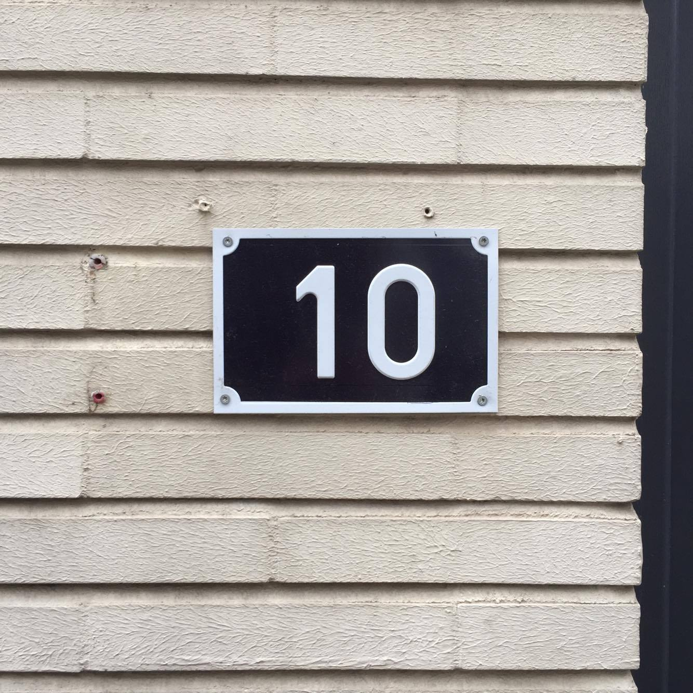
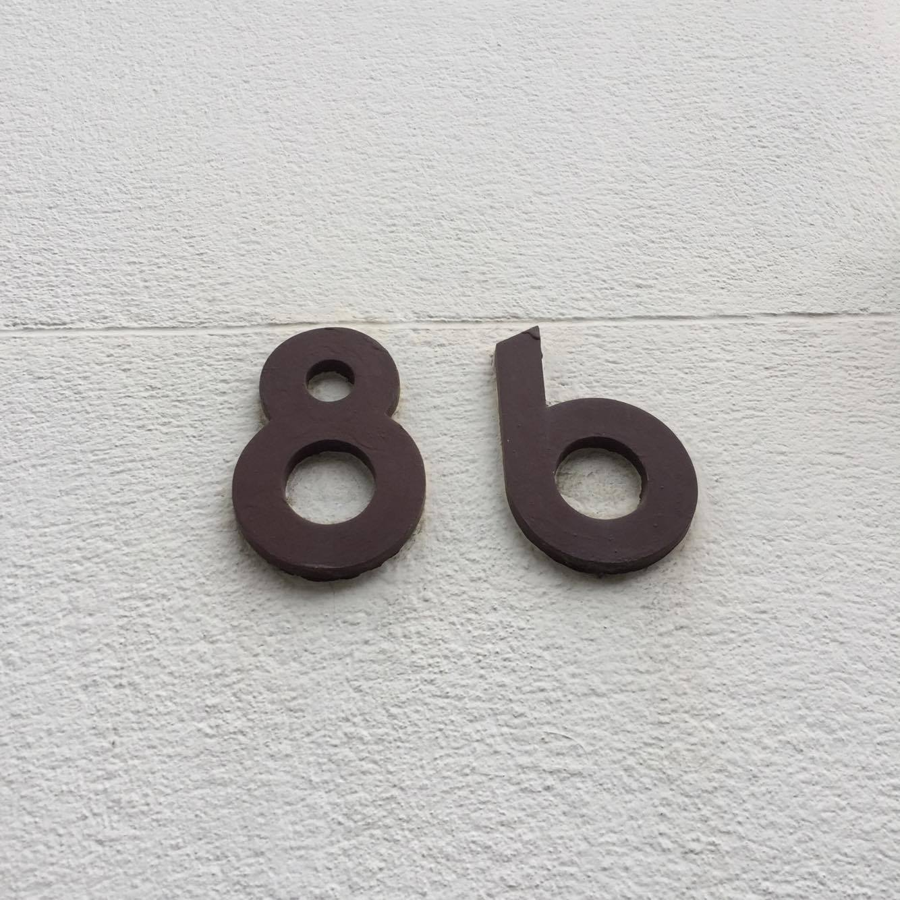

Dit is een persoonlijke ontdekkingstocht geweest. Samen met mijn peter ben ik, Emma, naar Antwerpen getrokken.
Het was zonder plan, maar we hadden wel onze camera's bij. Al snel besloten we ons te focussen op 1 element van de stad.
Hierdoor verandert namelijk je blik op de stad, huisnummers is het geworden.
Huisnummers


